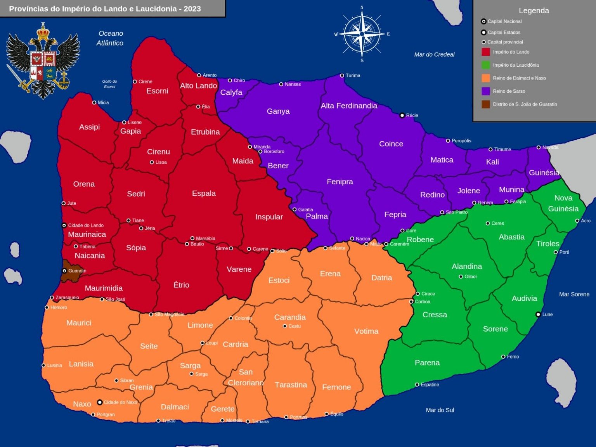

Arraste o mapa para navegar, use a roda do mouse ou os botões para ampliar, e toque em uma capital para abrir o atlas provincial.
O marco zero está fixado em Sefante. Longitude positiva segue para leste, longitude negativa para oeste, latitude positiva para norte e latitude negativa para sul.